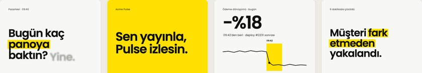
Ev Stili
Orijinal ev stili: kağıt zemin, mürekkep yazı, tek sinyal sarısı ve Poppins; kelimeler tek tek yükselir, düşüş fosforlu kalemle işaretlenir.
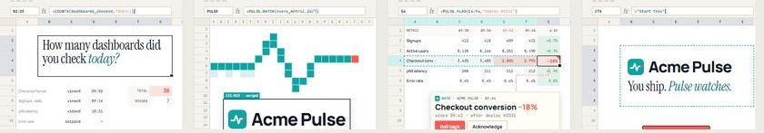
Spreadsheet Cinema
Kare, canlı bir e-tablodur: seçim kamera, formül çubuğu altyazı akışı, Pulse ise her satırı tarayan kesikli teal bir seçim alanıdır.
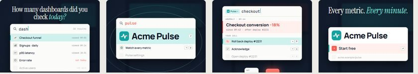
⌘K Keyboard Symphony
Bulanık bir uygulamanın üzerinde büyütülmüş bir komut paleti; yazılan sorgu başlık olur ve 3D tuş kapakları bas davulunda basılır.
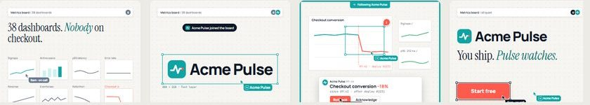
Multiplayer Cursors
Ortak bir tuvalde teal renkli 'Acme Pulse' imleci her grafik çerçevesini incelerken, nöbetçi insan kararı vermek için sahneye uçar.
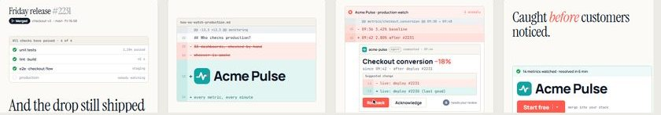
Code Review Diff
Hikaye bir pull request olarak anlatılır: Pulse, merge sonrası çalışmaya devam eden durum kontrolüdür ve sadece bir insanın uygulayabileceği bir geri alma öneriyor.
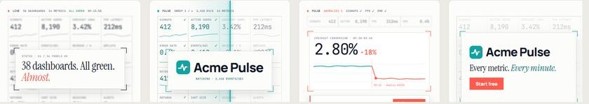
Light-Mode Data HUD
On altı ince çizgili mikro panelden oluşan bembeyaza yakın bir kokpit; teal bir tarama çizgisi üzerinden geçer ve köşe ayraçları yanlış olan tek sayıya kilitlenir.
OS Window Choreography
Pencereler oyuncu kadrosudur: gösterge panelleri üst üste yığılır, Exposé gibi yayılır ve genie efektiyle küçülüp kaybolurken Pulse küçük bir yardımcı pencere olarak en üstte kalır.
Inbox Choreography
Taşan bir gelen kutusu kendini ritimle ayıklar, ta ki Pulse'tan gelen sakin bir e-posta tek bir karar isteyene ve kutu sıfırlanana kadar.
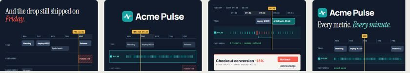
Calendar Timeline Scrub
Çalışma haftası bir düzenleme zaman çizelgesi olur: Pulse dakika dakika işaretlerden oluşan bir şerit, Salı yakalaması gelince Cuma'daki olay silinip gider.
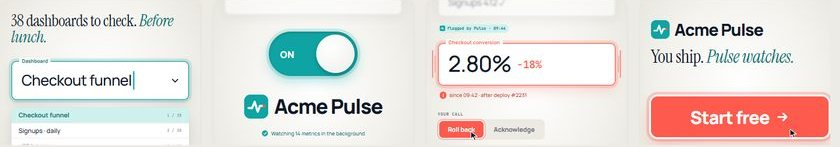
Form-Field Macro
Form kontrolleri makro ürün fotoğrafçılığı gibi çekilir: devasa bir alan önerilen düzeltmeyle kırmızı titrer, Pulse ise açılan bir anahtardır.
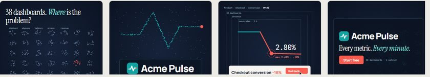
Powers-of-Ten Zoom
38 gösterge panelinin nokta bulutundan Pulse'ın bulduğu tek yanlış veri noktasına inen ve her nokta teal'e dönerken geri çıkan, kesintisiz bir sonsuz tuval dalışı.
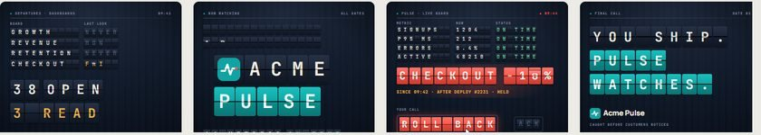
Split-Flap Board
Her metrik, takırdayan bir gidiş tarifesi panosunda bir satırdır; bir satır mercan rengine döner ve bir insan karar verene kadar öyle kalır.
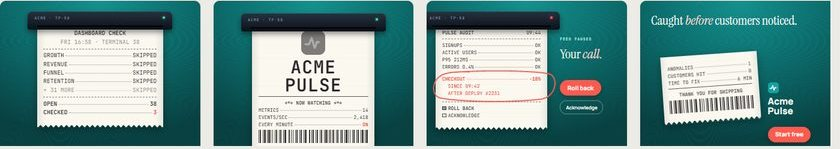
Thermal Receipt
Pulse ürününüzün akışını sürekli bir fiş gibi yazdırır; yanlış satırda fiş durur ve etrafına mercan bir daire çizilir.
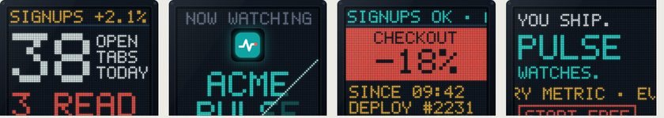
LED Dot-Matrix Ticker
Fiziksel bir LED tabela metriklerinizi bir borsa kayan yazısı gibi akıtır; sonunda bir satır donar ve tersine çevrilmiş mercan bir uyarı bloğuna dönüşür.
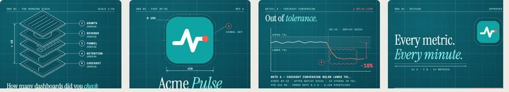
Blueprint Drawing
Ürün bir makine parçası gibi çiziliyor; tolerans aralığının dışına çıkan metrik mercan bir revizyon bulutu alıyor.
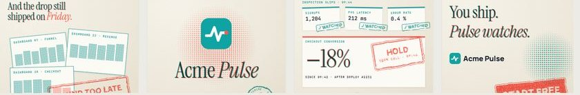
Rubber Stamp & Riso Ink
İki riso mürekkebi, iki lastik damga: her sağlıklı fişte teal '✓ İZLENDİ', anomalide ise tek bir mercan 'BEKLET — KARAR SENİN'.
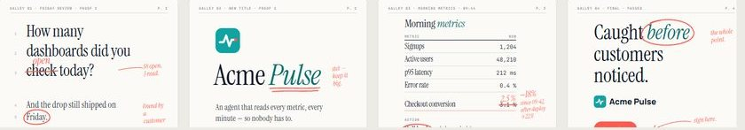
Proofreader's Redline
Metrikler bir prova baskısı gibi dizilir; Pulse yanlış rakamı mercan bir kalemle çizer, doğrusunu yazar ve bir insan paraf atar.
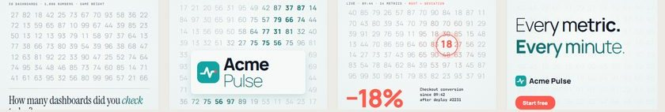
Variable-Font Data Morph
Yazı ağırlığı verinin kendisi olur: bir ağırlık dalgası rakam ızgarasını tarar ve kalın kalan tek rakam anomalidir.
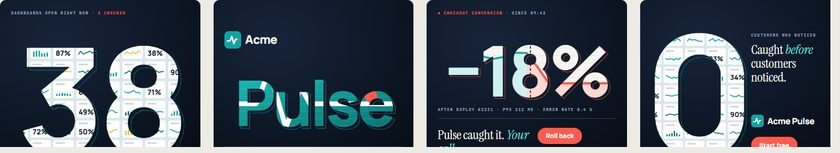
Typographic Window Reveal
Kareyi dolduran iri rakamlar ürüne açılan pencereler olur; sahne geçişleri bir karakterin harf gözünden içeri dalar.
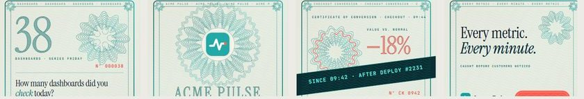
Guilloche Banknote Engraving
Her kare bir banknot gibi basılıdır; Pulse'ın UV taraması bir rozet halkasını mercan renginde kırar ve gizli bağlamı ortaya çıkarır.
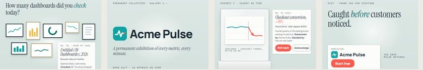
Museum Specimen Labels
Yakalanan her anomali küratörlü bir müze sergisine dönüşür: cam altında iğnelenmiş bir örnek ve net bir duvar etiketi.
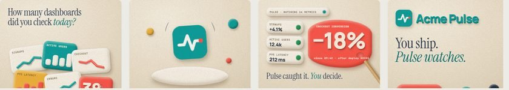
Clay Studio
Metrikler keçe kaplı bir masada mat plastisin bloklar olur; Pulse'ın modelleme çubuğu yumru mercan bloğu dürtükler.
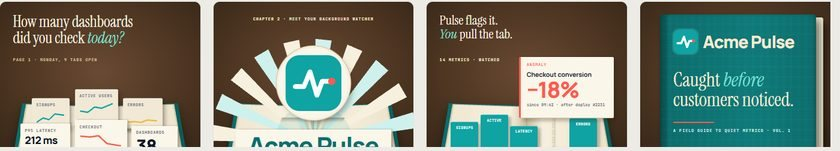
Pop-up Book
Metrik standların kitap kırışığından yükseldiği ciltli bir sürpriz kitap; anomali mercan renginde açılır ve geri alma için bir çekme şeridi taşır.
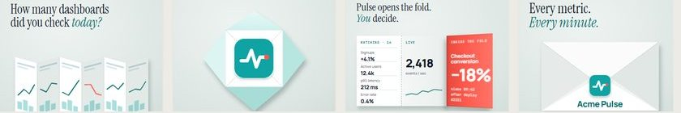
Origami
Tek bir kağıt yaprağı hikayenin tamamı boyunca katlanır; anomali bir göz kırpma katının içinde mercan renginde basılıdır.
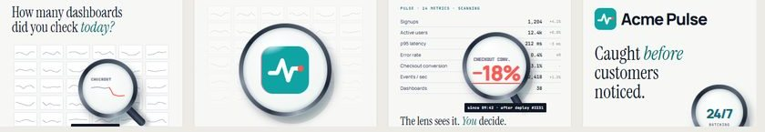
Glass Loupe & Refraction
Ağır bir optik büyüteç sakin bir metrik tablosunun üzerinde kayar ve camın dışında görünmeyen mercan anomaliyi ortaya çıkarır.
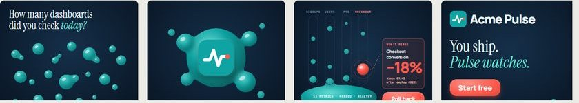
Liquid Metaball
Metrikler parlak teal damlacıklar olarak tek bir sakin havuza akar; anomali birleşmeyi reddeden mercan bir tanedir.
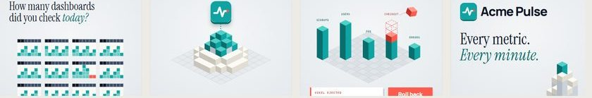
Pixel-to-Voxel
Düz piksel panolar bir voksel silüetine dönüşür; anormal kule mercan bir vokseli fırlatır ve arkasında kesikli hayalet küpler bırakır.
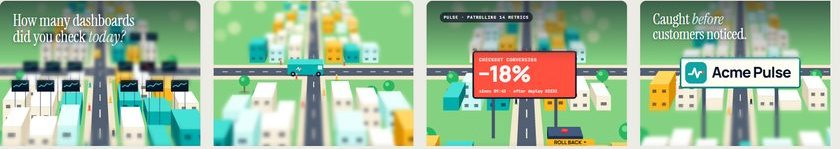
Tilt-Shift Diorama
Tilt-shift lensin altında bir oyuncak kasaba: Pulse minibüsü devriye gezer ve odak, düşen tek bir reklam panosuna kayar.
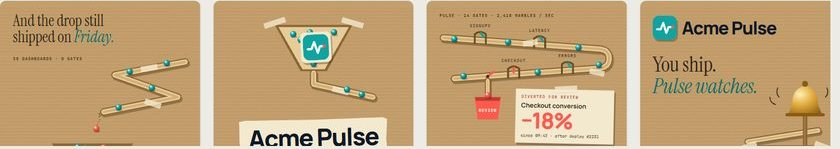
Marble-Run Machine
Metriklerin şablon kapılardan geçtiği kraft kartondan bir bilye pisti; başarısız bilye mercan bir inceleme kupasına yönlendirilir.
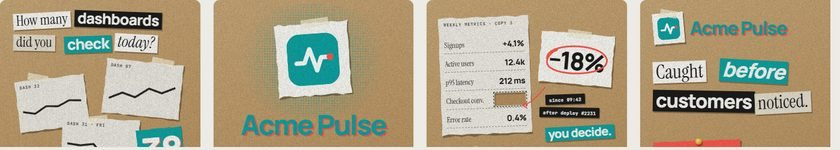
Stop-Motion Paper Collage
Kraft kağıt üzerinde fotokopi panolar ve fidye notu harfleri; anomali değeri kesilip çıkarılır ve mercan bir daire içindeki kupürle değiştirilir.
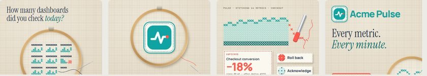
Stitch & Thread
Metrikler keten üzerine teal renginde çapraz dikişle işlenir; bir söküm aleti, checkout dönüşümünün düştüğü mercan dikişleri söker.
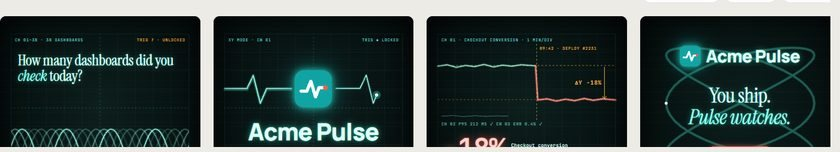
Vector-Phosphor Oscilloscope
Siyah bir osiloskop ekranında tek bir parlayan elektron demeti tüm filmi çizer; anomali, izin mercana dönüştüğü andır.
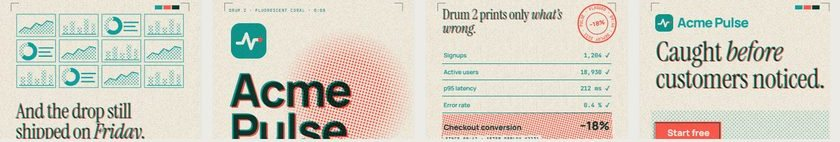
Risograph Two-Drum Print
Kaplamasız kağıt üzerinde iki riso mürekkebi: birinci tambur panonuzu basar, Acme Pulse ise sadece bir şeyin yanlış olduğu yerlere düşen mercan ikinci tamburdur.
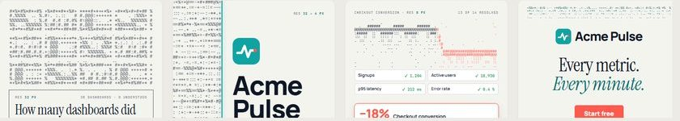
ASCII / Dither Resolve
Her şey kaba bir karakter alanı olarak başlar ve Acme Pulse anladıkça net arayüze dönüşür; sadece bir mercan kümesi çözünmeyi reddeder.
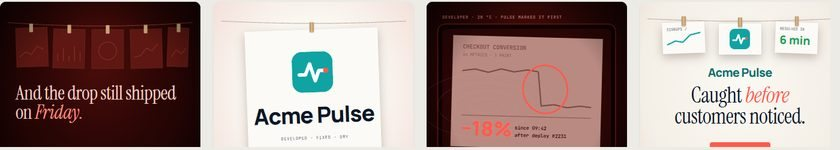
Darkroom Development
Kızıl bir karanlık oda ışığında metrik baskısı tepside ağır ağır belirir, ama sorundaki mercan işaret zaten oradadır çünkü Acme Pulse onu önceden bulmuştur.
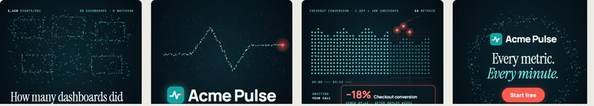
Point Cloud
Binlerce olay parçacığı bir pano sürüsünden nabız çizgisine ve nokta yığını bir grafiğe dönüşür; üç mercan kor bir türlü yerleşmez.
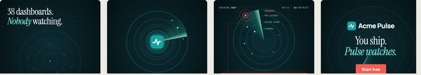
Sonar Sweep
Konik ışını hiç durmadan dönen sakin bir skop: metrikler yankı noktalarıdır, biri mercan renginde geri sinyal verir ki bir insan karar versin.
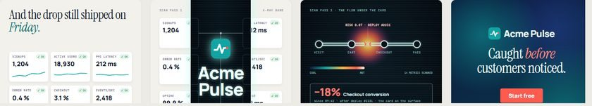
X-Ray / Thermal Scanner
Yüzeydeki her kart 'sorun yok' derken, tarayıcı bandının içinde ürün röntgene döner ve checkout akışının bir kemiği kırıktır.
Noir
Sert ışık ve panjur gölgeleriyle 1940'lar dedektif hikayesi: Acme Pulse geceyi ipuçlarını okuyarak geçirir, mercan renginde işaretler ve şafakta kararı insana bırakır.
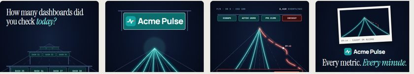
Long-Exposure Light Trails
Deklanşörün açık tutulduğu bir gece fotoğrafı: metrikler kaçış noktasına yarışan teal ışık izleridir, biri kayıt sırasında şeridinden çıkar.
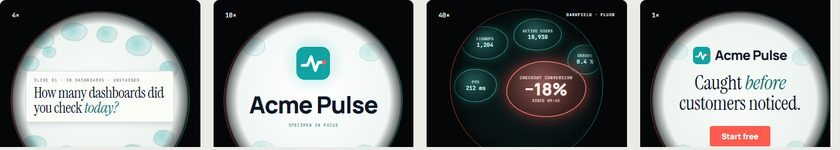
Under the Microscope
Metrikler dairesel bir mercek altında numuneye dönüşür: Acme Pulse 4x'ten 40x'e yakınlaşır ve karanlık alanda sadece anomali mercan renginde ışıldar.
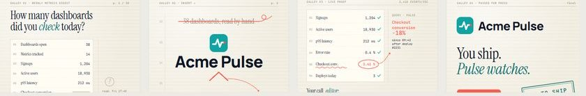
The Editor's Pass
Metrik özetin bir baskı provası gibi: görünmeyen bir editör yanlış tek rakamı işaretliyor, insan da sayfayı imzalayarak onaylıyor.
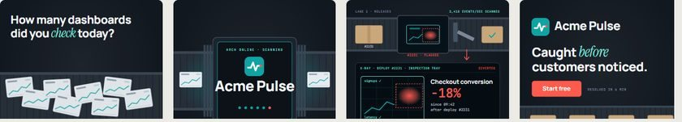
Security Belt Scan
Her sürüm bir bantla X-ray kemerinden geçiyor; mercan parıltılı tek paket bir insana yönlendiriliyor, bant çalışmaya devam ediyor.
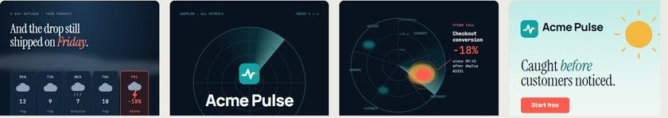
The Weather Forecast
Ürün sağlığı bir Doppler hava haritası gibi: Checkout üzerinde bir fırtına hücresi büyüyor, insan meteorolog durumu değerlendiriyor ve film açık havayla bitiyor.
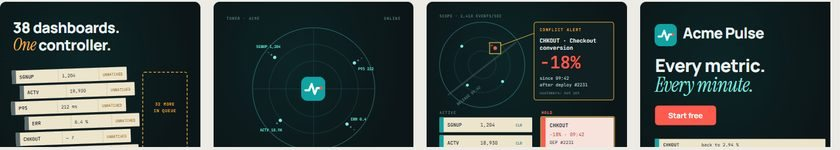
Air-Traffic Control
Her metrik sakin bir radar konsolunda bir uçuş; çakışan tek uçuş HOLD'a alınıyor, insan kontrolör onu serbest bırakıyor.
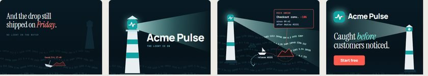
The Lighthouse
Acme işaretiyle aydınlanan bir deniz feneri, canlı rakamlardan oluşan bir denizi tarıyor; ışık huzmesi gizli bir kayalığı ortaya çıkarıyor, bekçi de sürümü geri çeviriyor.
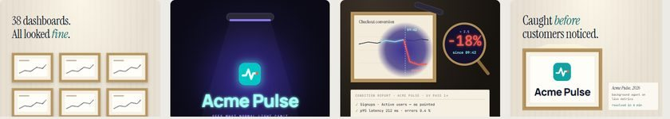
Conservator's UV Lamp
Panolar normal ışıkta kusursuz görünen tablolar gibi asılı; bir UV lamba üzerine boyanmış rakamı ortaya çıkarıyor, insan restoratör de kararı veriyor.
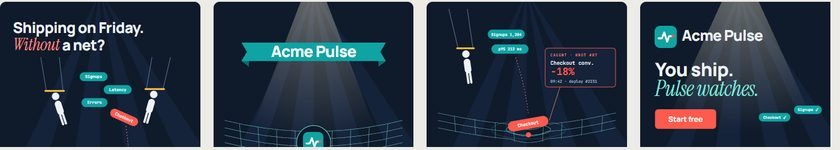
The Safety Net
Sanatçıların metrik jetonlarını havada birbirine attığı düz bir sirk çadırı; Checkout jetonu kayıyor, veri çizgilerinden örülü bir ağ onu yakalıyor, gösteri yönetmeni de kararı veriyor.
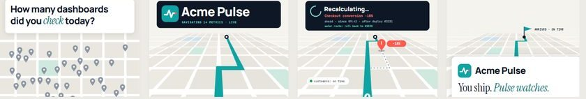
GPS Reroute
Sürümün, eğik bir haritada çizilen bir rota; Pulse ileride tehlikeyi fark ediyor, 'Yeniden hesaplanıyor…' diyor, sen de güvenli yolu onaylıyorsun ve yine de zamanında varıyorsun.
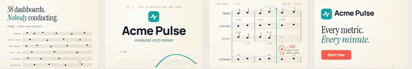
The Conductor's Score
Her nota dizisinin bir metrik olduğu canlı bir orkestra partisyonu; Checkout notası pesleşiyor, Pulse onu yuvarlak içine alıyor, insan da yeniden ayarlayan işareti veriyor.
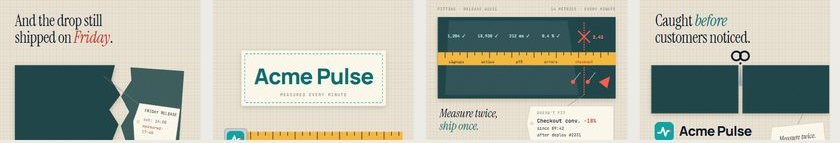
The Tailor's Fitting
Bir kesim masasında 'iki kez ölç, bir kez kes': bir mezura her metriği ölçüyor, tebeşir uymayan tek metriği işaretliyor, makas da yalnızca insan onay verdikten sonra tek ve temiz bir kesik atıyor.
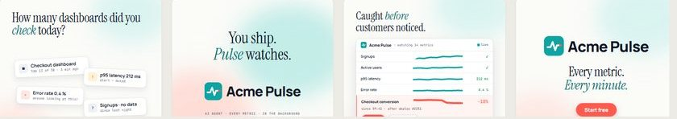
Clean Product Film
Ferah temel çizgi: sıcak beyaz zemin üzerinde gerçek ürün arayüzü, yumuşak renk bulutları, tek bir mercan anomali satırı ve tek bir insan tıklaması.
Depth / 3D
Perspektifte süzülen cam paneller: panonun zeminde, Pulse ise üzerinde asılı kalan denetim katmanı olarak.
Editorial Data
Hayat bulmuş bir İsviçre finans raporu: kılcal çizgili ızgara, dev mono rakamlar, kare başına tek bir vurgu rengi ve yuvarlak içine alınmış bir −18%.
Agent Chat
Filmin tamamı tek bir sohbet penceresinde geçiyor: ajan önce mesaj yazıyor, anomali de Geri al etiketli bir araç kartıyla geliyor.
Bento Grid
Beyaz karolardan oluşan 6x6'lık bir bento düzeni; karo başına tek bir mesaj, düşüş anında da tek bir ana karoya toplanıyor.
Workflow Canvas
Paketlerin ritme göre zıpladığı koyu bir düğüm tuvali; tek bir mercan dal da anomaliyi bir insana teslim ediyor.
Isometric World
Havada süzülen izometrik bir fabrika: pipeline'ın bir bant olarak, Pulse'ın camgöbeği bir cam katman olarak; tek bir mercan küp de bir insana yönlendiriliyor.
Hand-Drawn Marker
Problem için noktalı kâğıt üzerinde marker karalamaları, düşüş anında bir silgi, kanıt için de tek bir mercan halkalı temiz bir arayüz.
Mobile Notifications
Sahne olarak telefon: bildirimlerin altında kalmış bir kilit ekranı, ardından bir Geri al düğmesiyle tek bir anomaliyi öne çıkaran bir Live Activity.
Neo-Brutalist
Sert gölgeler, mürekkep dış çizgiler, çıkartmalar ve bir bant yazı: her vuruşta baskı yapan gürültülü neo-brütalist kartlar.
Dark Keynote
Sinematik lacivert bir keynote sahnesi: kare başına tek bir spot ışığı ve Pulse anomaliyi bulduğunda mercana dönen camgöbeği bir yapay zekâ kenar parıltısı.
Mascot Agent
Ajan, logonun noktasından doğan sessiz camgöbeği bir karakter olarak panonun üzerinden bakıyor ve gözleriyle anomaliyi işaret ediyor.
Isotype Unit Chart
Neurath tarzı resimli istatistik: sayılabilir piktogram satırları, anomali de basitçe kaybolan iki araba.
Bar Chart Race
Yayın tarzı bir sıralama yarışı: Acme Pulse listeye 1 numaradan giriyor, Checkout dönüşümü de tabloda dibe vuruyor.
Sankey Leak
Minard tarzı bir şerit akışı; anomali de checkout aşamasından sıyrılıp ayrılan mercan bir sızıntı.
Small Multiples
Tufte tarzı, aynı ölçekte sparkline'lardan oluşan bir ızgara; tek bir karo, Checkout dönüşümü, düzeni bozuyor.
Pulsar Ridgeline
Unknown Pleasures tarzı üst üste dizilmiş sıradağ çizgileri; deploy yayınlandığı anda checkout tepeleri düzleşiyor.
Rosling Bubble Trails
Dev bir filigran saat altında Gapminder tarzı baloncuklar ve izler; checkout baloncuğu 09:42'de dibe batıyor.
Trace Waterfall
İzleme arayüzü tarzı bir film: bir log akışı, ardından basamaklanan span'lar; deploy #2231'den sonra gelen mercan bir span da −18%'i açıklıyor.
Hex Tile Cartogram
Haber odası tarzı bir altıgen karo haritası; Pulse her bölgeyi aydınlatıyor, bir karonun mercan düşüşü de komşularına yayılıyor.
Nightingale Rose
Viktorya dönemi tarzında kazınmış bir polar alan gülü: 09:42'den sonra üç dilim, noktalı normun altında kalıyor.
Streamgraph River
Organik bir akış grafiği nehri: checkout katmanı deploy #2231'den sonra sıkışıp mercan rengine dönüyor.
Living Widgets
Dashboard widget'ları, Pulse bakana kadar uyuklayan gözlü karakterlere dönüşüyor — checkout kartı ise kelimenin tam anlamıyla omuz sarkıtıyor.
Felt Puppet Show
Keçeden el kuklası Pulse, masa üstü bir sahnede belirip anomaliyi işaret ediyor — Geri al'a ancak gerçek bir insan eli basabiliyor.
8-Bit Sidekick
Pulse, piksel sanatı bir yardımcı karakter: metrikler platform, checkout bloğu çöküyor, kırmızı bir '!' patlıyor ve 1. Oyuncu GERİ AL'ı seçiyor.
Sticker Cast
Kesik çıkartmalardan bir dünya: tek gözlü camgöbeği Pulse çıkartması anomaliyi fark ediyor, emoji kadrosu da yorgundan şaşkına, şaşkından mutluya geçiyor.
Mood Blob
Tek bir camgöbeği blob; çevresi sistemin ruh hâlini gösteriyor. Her şey yolundayken zıplıyor, anomalide gerilip dikenleşiyor, karar verilince yastık gibi yumuşuyor.
Rubber-Hose Gloves
1930'ların rubber-hose çizgi filmi: Pulse camgöbeği bir çalar saat; çalıyor, kırık kara tahtayı gösteriyor, bir insan eli de GERİ AL pistonuna basıyor.
Shadow Puppet Theatre
Renkli bir perde önünde kesik kâğıt siluetler: bir balıkçıl metriğin nehrinde durur ve şelaleyi ilk o görür; bir insan "Geri al" fenerini kaldırır.
Pocket Pet
Pulse, camgöbeği yumurta anahtarlıkta yaşayan sanal bir evcil hayvan: ödeme hastalanınca LCD'deki yaratık "!" yakıyor, sen de A'ya basıp geri alıyorsun.
Night Owl
Metrik çizgisine tünemiş geometrik bir gece baykuşu maskotu: dal sarkınca başını çevirip öter, ışıklı penceredeki insan da geri alır.
Kaomoji Terminal
Pulse terminaldeki bir kaomoji'den ibaret: (-_-) → (•_•) → (°o°;) → (^_^)b. İnsan da geri alma sorusunu tek tuşla yanıtlıyor.
Bauhaus Primer
Daire, kare, üçgen ve siyah bir çubuk: ızgaradan düşen tek şeklin anomali olduğu bir Bauhaus alfabesi.
Swiss Grid
Uluslararası Tipografik Stil: görünür 12 modüllü ızgara, dev rakamlar ve her şeyi söyleyen tek bir mercan satır.
Constructivist Agitprop
1920'lerin agitprop poster dili: camgöbeği bir kama, kör noktalar çemberini deliyor ve bir megafon anomaliyi haykırıyor.
Art Deco Marquee
1930'ların galası: güneş ışını desenleri, kademeli altın çerçeveler ve mercan iğnesi −18%'e savrulan bir asansör kadranı.
Cut-Paper Title Sequence
Yüzyıl ortası jenerik estetiği: kayan kâğıt çubuklar, elle kesilmiş zikzak bir nabız çizgisi ve anomali olarak düşen yırtık bir çubuk.
Op Art Illusion
Riley ve Vasarely'nin optik sanatı: sağlıklı veri kusursuz bir desen, anomali de gözünün önce yakaladığı mercan rengi bir bükülme.
Pop-Art Ben-Day
Lichtenstein tarzı çizgi roman kareleri: Ben-Day noktaları, konuşma balonları ve anomaliyi işaretleyen bir ZAP!.
Memphis Milano
80'lerin Memphis Milano maksimalizmi: laminat bloklar, kıvrımlar ve terrazzo; sevimli bir kıvrım aniden mercan bir zikzaka dönüşüyor.
Beveled '95 Desktop
90'ların ortası masaüstü nostaljisi: üst üste açılan hesap tablosu pencereleri, bir Pulse uyarı penceresi ve 'Start free' yazan bir Başlat düğmesi.
Y2K Liquid Chrome
Binyıl dönümünün teknoloji iyimserliği: sıvı krom harfler, şeker camgöbeği jöle pencereler ve anomali için mercan renginde bir jel kapsül.
One-Take Oner
Filmin tamamı kesintisiz bir kamera hareketi: dashboard koridoru, reveal odası, anomaliye vinç inişi ve pencereden çıkış.
Match Cut
Her vuruş aynı yerdeki tek bir mercan daireden geçiş yapıyor: saat kadranı → Acme işareti → anomali noktası → sloganın son noktası.
Split Screen
Sert mürekkep aralıkları kareyi eşzamanlı görünümlere bölüyor: altı dashboard, reveal için çarpan bir aralık, tek anomalide senkronize üç kamera, sonra aralıklar kapanıyor.
Whip Pan
360 derece bir panoramanın odaları, dünyayı çizgilere yayan 0,25 saniyelik hızlı kaydırmalarla birbirine bağlanıyor ve her vuruşta net iniş yapıyor.
Speed Ramp
Zaman, montajın kendisi: bir haftalık dashboard'da 8 kat hızlı ileri sarma, düşüşte 1 kata anında geçiş, insan kararı için çeyrek hızda yavaş çekim, her karenin altında bir hız grafiği.
Dolly Zoom
Kanıt vuruşunda Hitchcock'un vertigo çekimi: anomali kartı sabit boyutta kalırken arkasındaki dashboard duvarı bir tünele uzuyor.
Overhead Desk
90 derece kuş bakışı bir masa filmi: elin süpürdüğü basılı dashboard'lar, düşüşte masaya bırakılan Acme işareti, telefon bildiriminde Geri al'a dokunan bir parmak.
Rack Focus
Sahnenin dilini sığ alan derinliği kuruyor: fokus 38 sekmeden Acme Pulse ekranına, oradan tek net anomaliye kayıyor, sonra CTA için diyafram kapanıyor.